Otto carte giudicate favorevolmente e due nuove proposte in attesa del giudizio del proprietario. I campi non salvano automaticamente il testo. Registro.
Questo Torna Utile
base.gigi.QuestoTornaUtile · Giudizio: questo torna utile: ok.
A 60 px
Beppe e sedia rotta leggibili; pezzo di legno distinto. Braccia separate, dita e tasche troppo minute; nessun attrezzo in tasca distinguibile.
questo torna utile: ok
Cuffie e Testa Bassa
base.gigi.bound.UnaStrettaEPassa · Versione 6 · Giudizio: cuffie: ok ce lo facciamo andare bene.
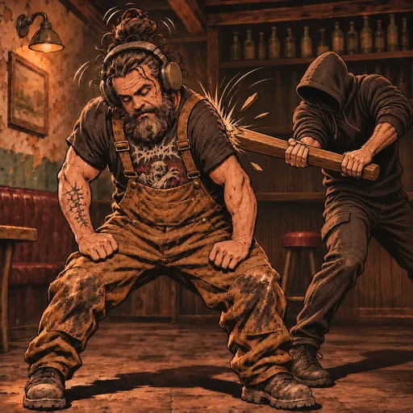
A 60 px
Spranga e colpo leggibili; mani e frammenti minuti, arti distinguibili; tasche non verificabili. Avventore incappucciato impugna la spranga con due mani; impatto e schegge visibili.
cuffie: la sedia proprio non viene, cambiamo del tutto avventore e strumento. facciamone un altro che spacca addosso a beppe una spranga di legno
Versioni precedenti e giudizi
Cuffie e Testa Bassa
base.gigi.bound.UnaStrettaEPassa · Versione 5 · Giudizio: in attesa.
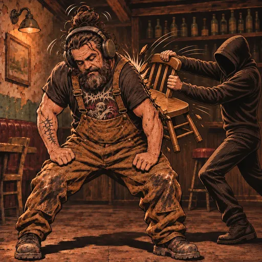
A 60 px
Sedia e impatto visibili; mani e giunti minuti, arti distinguibili; tasche non verificabili. Il cliente afferra lo schienale con entrambe le mani; seduta e gambe sono visibili, con frammenti all’impatto.
cuffie: le mani vanno bene, ma la sedia no, è strana. facciamogliela afferrare per lo schieale
Versioni precedenti e giudizi
Cuffie e Testa Bassa
base.gigi.bound.UnaStrettaEPassa · Versione 4 · Giudizio: in attesa.
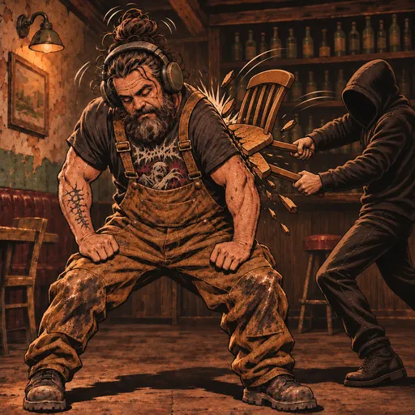
A 60 px
Sedia e impatto leggibili; le due prese e i frammenti sono minuti; arti distinguibili, tasche non verificabili. Due mani afferrano due elementi paralleli della sedia, spezzata sulla schiena; le gambe si sovrappongono alla seduta.
cuffie e testa bassa: va bene il cappuccio, però l'azione di dargli la sedia nella schiena non è chiara per via della presa che ha l'avventore sulla sedia stessa. inoltre la gamba è troppo lunga
Versioni precedenti e giudizi
Cuffie e Testa Bassa
base.gigi.bound.UnaStrettaEPassa · Versione 3 · Giudizio: in attesa.
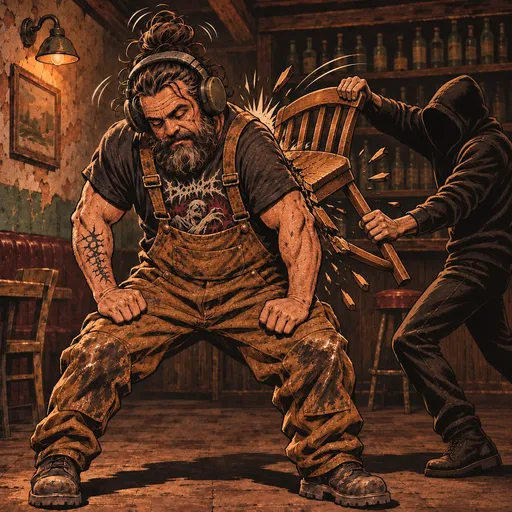
A 60 px
Sedia rotta e impatto distinguibili; mani e frammenti minuti; nessun attrezzo in tasca distinguibile. Avversario con cappuccio; Beppe appare impassibile. La sedia spezzata ha elementi sovrapposti.
cuffie e testa bassa: l'uomo che colpisce beppe è ancora strano: facciamo gli gli spacca una sedia sulla schiena e beppe non se ne accorge minimamente
Versione 2 conservataVersione 1 conservata
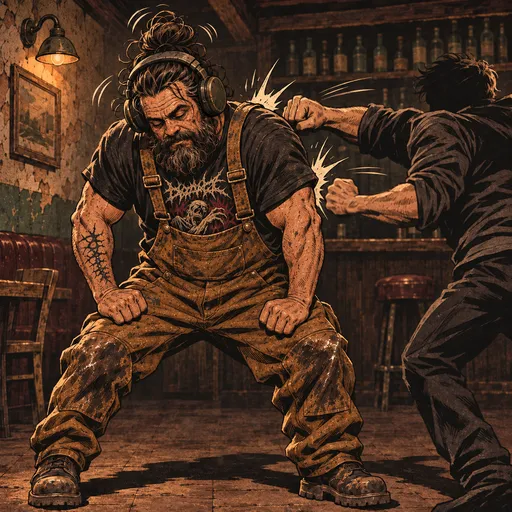
cuffie: ok ce lo facciamo andare bene
Colpo col Cacciavite
base.gigi.bound.ColpoDiCacciavite · Versione 2 · Giudizio: cacciavite: va bene.
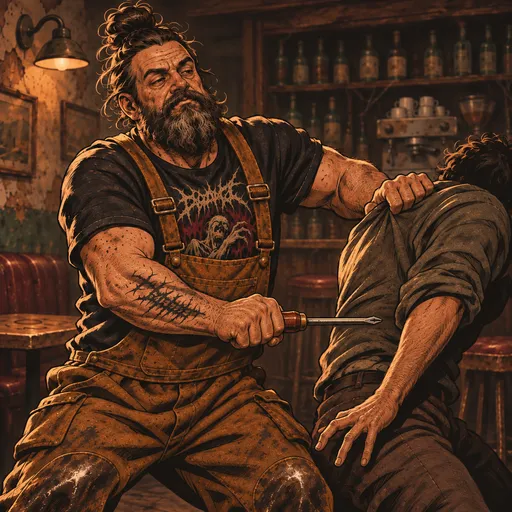
A 60 px
Asta sottile visibile, punta e dita minute; braccia distinguibili, tasche non leggibili. Cacciavite con manico, asta e punta visibili; la punta si sovrappone al vestito dell’avversario.
colpo col cacciavite: non si vede il cacciavite, ma solo il manico. facciamolo vedere nella sua interezza stretto nel pugno di beppe. benissimo il resto dell'immagine
Versione 1 conservata
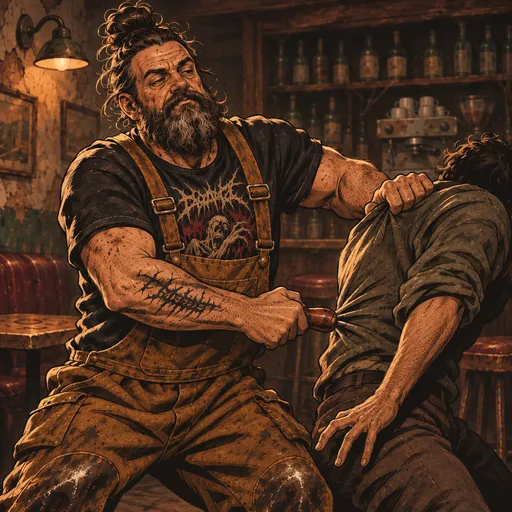
cacciavite: va bene
Affilare gli Utensili
base.gigi.bound.Lima · Versione 2 · Giudizio: affilare gli utensili: va bene.
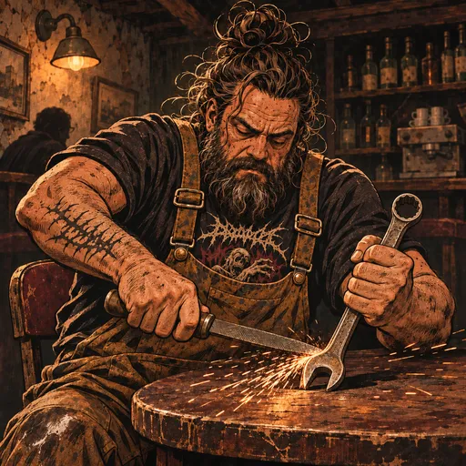
A 60 px
Lima e chiave leggibili; estremità e dita minute, braccia separate; tasche non verificabili. Chiave con anello chiuso e bocca aperta; lima impugnata e scintille conservate.
affilare gli utensili: le estremità della chiave sono strane
Shaker e pezzi sul tavolo distinguibili; mano avversaria e braccia visibili, dita minute; tasche senza attrezzi distinguibili.
disassemblare: perfetto
Chiave da Tredici
base.gigi.ChiaveDaTredici · Versione 6 · Giudizio: Approvo, chiudi (D218).
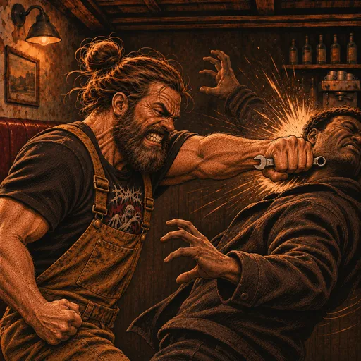
A 60 px
Pugno e impatto leggibili; chiave e dita minute, tasche non verificabili. Chiave con due estremità sporgenti dal pugno; volto dell’avventore visibile e parzialmente tagliato dal bordo.
chiave: non ci siamo, cambiamo completamente scena. facciamo beppe che tira un pugno violento con la chiave stretta nel pugno
Versioni precedenti e giudizi
Chiave da Tredici
base.gigi.ChiaveDaTredici · Versione 5 · Giudizio: in attesa.
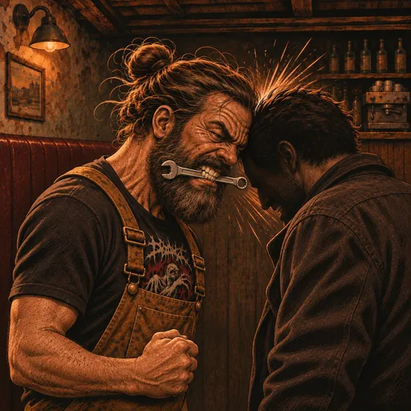
A 60 px
Testata e chiave fra i denti leggibili; dita minute, tasche fuori campo. Beppe meno ingombrante; una mano visibile, l’altra fuori scena. Il profilo dell’avventore è in ombra.
chiave: meglio, ma beppe è troppo grosso e la sua mano sinistra è sbagliata, non si dovrebbe vedere. inoltre l'avventore è fatto strano
Versioni precedenti e giudizi
Chiave da Tredici
base.gigi.ChiaveDaTredici · Versione 4 · Giudizio: in attesa.
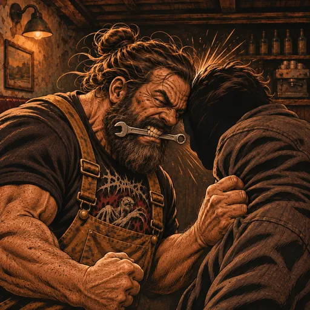
A 60 px
Testata e chiave fra i denti leggibili; estremità e dita minute; tasche fuori campo. Nuovo primo piano; chiave intera fra i denti, una mano afferra la spalla dell’avversario.
chiave da tredici proprio non ci siamo, cambiamo completamente scena: un primo piano di beppe che stringa la chiave fra i denti mentre tira una testata
Versioni precedenti e giudizi
Chiave da Tredici
base.gigi.ChiaveDaTredici · Versione 3 · Giudizio: in attesa.
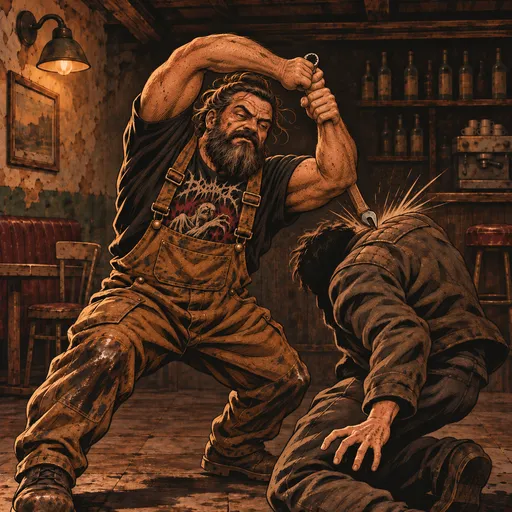
A 60 px
Colpo e due braccia leggibili; mani e chiave minute, tasche non distinguibili. Due mani visibili; chiave ancora lunga e asta parzialmente nascosta dietro il braccio: continuità non verificabile.
chiave da tredici non va bene per niente, è sparita una mano di beppe e la chiave è troppo lunga
Versioni precedenti e giudizi
Chiave da Tredici
base.gigi.ChiaveDaTredici · Versione 2 · Giudizio: in attesa.
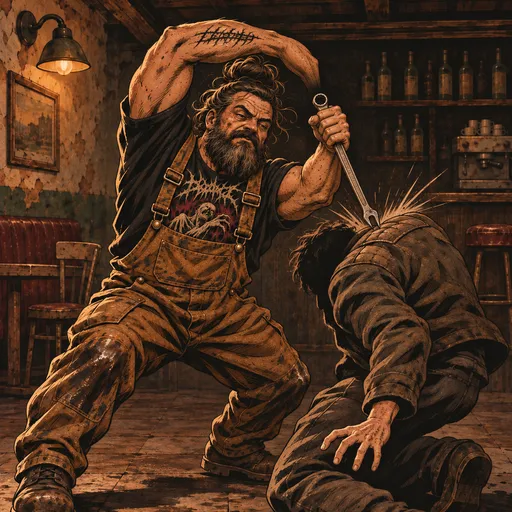
A 60 px
Colpo e chiave più sottile visibili; estremità e mani minute, tasche poco distinguibili. Chiave ridotta ma ancora lunga rispetto alla mano; il braccio superiore termina presso la mano sovrapposta e il raccordo è ambiguo.
chiave da tredici: più che una chiave da tredici questa è una chiave da centotrenta! è troppo grande
Versione 1 conservata
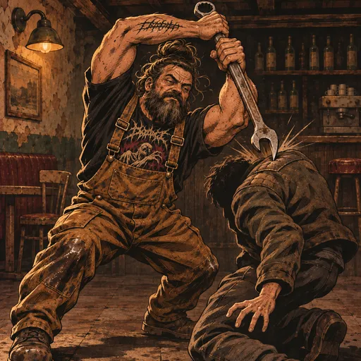
Preparare il Lavoro
base.gigi.ColpoDiChiaveInglese · Versione 6 · Giudizio: Approvo, chiudi (D218).
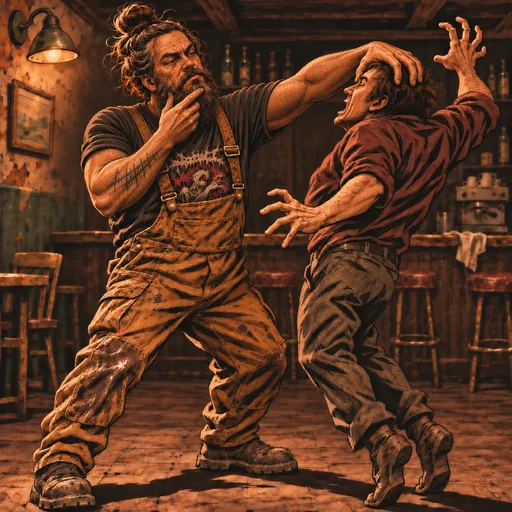
A 60 px
Beppe tocca la barba e tiene la testa dell’avventore; dita minute, arti distinguibili, tasche non verificabili. Riga e livella assenti; una mano sulla barba e una sulla testa dell’avventore.
preparare il lavoro: ancora non mi piace, manteniamo la scena così ma togliamo la riga e facciamo che la mano libera di beppe si tocca la barba, pensieroso
Versioni precedenti e giudizi
Preparare il Lavoro
base.gigi.ColpoDiChiaveInglese · Versione 5 · Giudizio: in attesa.
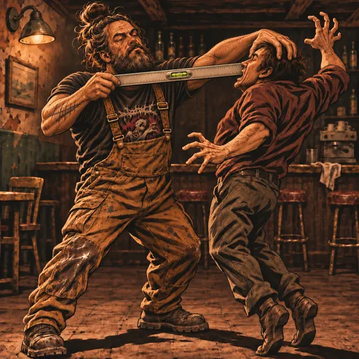
A 60 px
Riga e presa sulla testa leggibili; livella e dita minute, arti distinguibili; tasche non verificabili. Riga più larga con livella centrale, una mano la impugna e l’altra tiene la testa.
preparare il lavoro: molto meglio, ma la riga non mi convince. facciamola più grande e mettiamoci anche una livella al centro
Versioni precedenti e giudizi
Preparare il Lavoro
base.gigi.ColpoDiChiaveInglese · Versione 4 · Giudizio: in attesa.
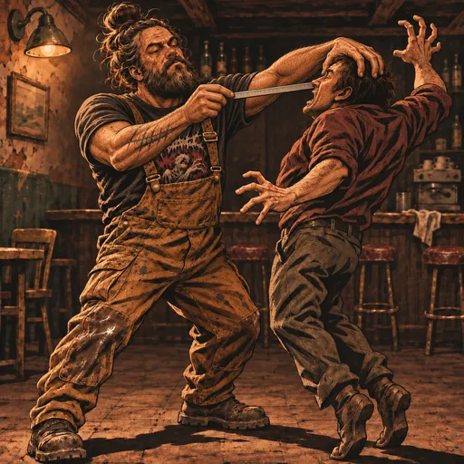
A 60 px
Riga e presa sulla testa visibili; dita e tacche minute; arti distinguibili, tasche non verificabili. Una mano tiene la riga, l’altra la testa dell’avversario; il viso dell’avversario è parzialmente visibile.
preparare il lavoro bene la riga, ma beppe la deve stringere in modo più naturale e con l'altra mano deve tenere fermo per la testa l'avventore
Versioni precedenti e giudizi
Preparare il Lavoro
base.gigi.ColpoDiChiaveInglese · Versione 3 · Giudizio: in attesa.
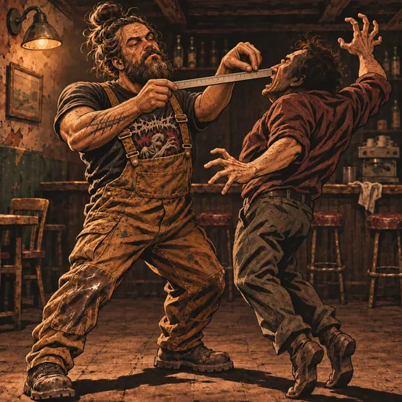
A 60 px
Riga e figure leggibili; tacche e dita minute, braccia distinguibili; tasche non verificabili. Calibro sostituito da riga rettilinea con tacche, poggiata sul naso; mani visibili.
preparare il lavoro non va bene, cambiamo il calibro con una riga metrica
Versioni precedenti e giudizi
Preparare il Lavoro
base.gigi.ColpoDiChiaveInglese · Versione 2 · Giudizio: in attesa.
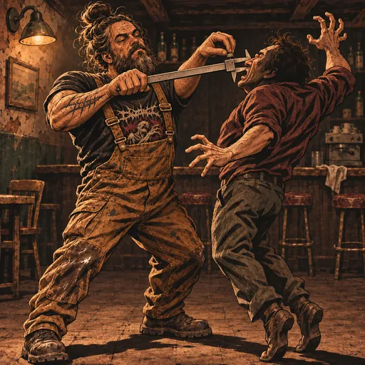
A 60 px
Figure e asta del calibro leggibili; ganasce e dita minute, nessun attrezzo in tasca distinguibile. Calibro ridisegnato; una ganascia sembra sotto il naso e il contatto con entrambe le ganasce non è chiaro.
preparare il lavoro: il calibro è strano vicino alle mani di beppe
Versione 1 conservata
Secondo Bagagliaio
base.gigi.SottoIlCofano · Giudizio: secondo bagagliaio: va bene.
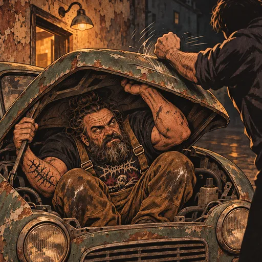
A 60 px
Cofano e Beppe leggibili; asta nella mano visibile, forma e funzione minute; arti in parte coperti, tasche non verificabili.
secondo bagagliaio: va bene
Lavoro Fatto Bene
base.gigi.LavoroFattoBene · Giudizio: lavoro fatto bene: ok.
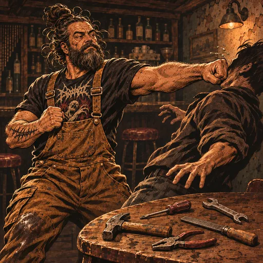
A 60 px
Pugno e avversario leggibili; attrezzi sul tavolo minuti e forme non tutte distinguibili; arti separati, dita e tasche minute.
lavoro fatto bene: ok
Metodo Empirico
base.gigi.UnaStrettaDiProva · Giudizio: metodo empirico: va bene.
A 60 px
Tavolo inclinato e chiave visibili; estremità e dita minute, braccia distinguibili; tasche non verificabili.